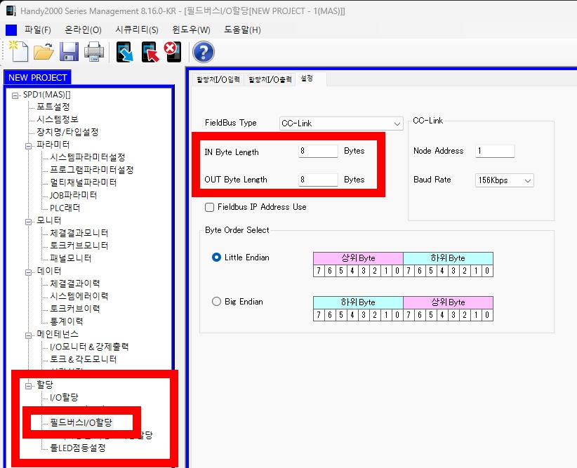

CC-Link 설정가이드
Handy2000기준으로 PLC CC-Link 파라미터를 설정합니다.
1. L 값 산정(계산치)
L = MAX(IN Byte Length, OUT Byte Length)
중요:두 값 중 큰 값 하나만 L로 사용합니다. IN Byte와 OUT Byte를 더하지 않습니다.
IN 3 Byte / OUT 3 Byte
를 입력 한 경우에는 L = 3
를 입력 한 경우에는 L = 3
IN 3 Byte / OUT 6 Byte
를 입력 한 경우에는 L = 6
를 입력 한 경우에는 L = 6
IN 12 Byte / OUT 8 Byte
를 입력 한 경우에는 L = 12
를 입력 한 경우에는 L = 12
IN 16 Byte / OUT 20 Byte
를 입력 한 경우에는 L = 20
를 입력 한 경우에는 L = 20

2. PLC CC-Link 설정값
| L 값 | 확장사이클 | 점유국수 | 리모트국점수 |
|---|---|---|---|
| 1 ~ 4 Byte | 1배 | 1국 | 32점 |
| 5 ~ 8 Byte | 1배 | 2국 | 64점 |
| 9 ~ 12 Byte | 1배 | 3국 | 96점 |
| 13 ~ 16 Byte | 1배 | 4국 | 128점 |
| 17 ~ 28 Byte | 2배 | 4국 | 224점 |
| 29 ~ 56 Byte | 4배 | 4국 | 448점 |
| 57 Byte 이상 | 8배 | 4국 | 896점 |
3. 작업 전 확인사항
- IN / OUT 덧셈 금지
- IN/OUT 중 큰 Byte 값을 L로 적용
- 상기표대로 확장사이클/점유국수/리모트국점수를 설정
- 점유국수만큼 연속 국번이 사용되므로 다른 장치와 중복되지 않도록 확인
예: 시작 국번 5번, 4국 점유 → 5 ~ 8번 사용